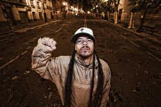
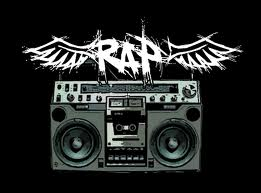
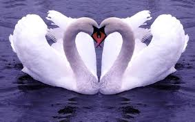

En El antro del Rap queremos que puedas sentir lo que es estar encima de un escenario y ver como la gente se emociona con tus propias letras. Atrevete y compite por el trono del Antro en nuetro escenario en el local.
17/06/2013: Para los amantes de los graffitis este sabado podrán demostrar sus habilidades en nuestro local, tendremos un muro muy especial en el que podreis dar rienda suelta a vuestras habilidades con el spray. Se dispondra de 30 minutos para realizar el dibujo y una gama de 10 colores para poder utilizar.
13/06/2013: Afinad vuestras gargantas porque ya está aquí el torneo de los torneos del rap. Habrán dos fases eliminatorias para llegar a la final. La primera fase sera de freestyle de 60 segundos cada ronda de cada participante, la segunda fase sera con la canción mas votada en la página web.
21/06/2013: Que sería de todos nosotros sin nuestros queridos DJ's...NADA!!! Por ello queremos organizar un "especial" para ellos dónde podrán demostrar sus habilidades rayando los discos. En esta ocasión se permitirá participar sin ser usuario con bases subidas. Los que no sean usuarios de la página nos tendrán que enviar un mail con los datos personales(dni, nombre, apellidos, nºmovil) y con almenos dos bases. Os responderemos en la mayor brevedad posible con la confirmación de la invitación al evento.
15/07/2013: Llegó el momento para demostrar la velocidad mental para dejar a tu rival K.O, si crees que tienes habilidades para improvisar alistate de forma totalmente gratuita y disfruta de una tarde intensa donde el mejor será el rey de los gallos. Se improvisara en rondas de 60 segundos con una base muy muy cañera para que os motiveis al máximo.